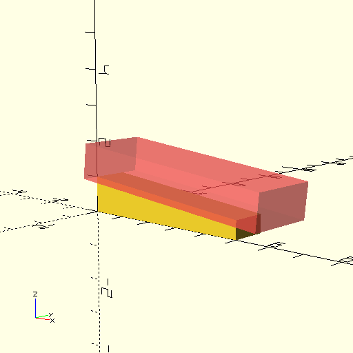

Read time: 5.2 minutes (518 words)
Debugging OpenSCAD Code¶
There are several features available in the OpenSCAD tool that can be used to debug your code. Beginners often debug by adding a bit of code and processing that code to get a quick look at the results. However, that does not always work, especially when you are trying o slice away pieces of a n object. Here are some simple tweaks you can make to simplify debugging:
Echo Output¶
To display the results of calculations, or to see that your code has reached a particular spot, the echo command will cause display on the console at the lower right as your code is processed:
Debugging Difference Operations¶
When we use the difference operation to carve off part of a shape, it is useful to see both shapes. I use this feature a lot to create things like tapered spars. OpenSCAD lets you mark the shape being used to remove part of a shape so it can be seen in a transparent phantom-like form. This is handy when writing the code. Here is an example:
1//#######################################################################
2// single_taper_spar.scad - spat tapered on one side
3// (c) 2021 - Roie R. Black
4// docs: https://rblack.github.io/math-magik/magik/single_taper_spar.html
5
6module single_taper_spar(l=5, z1=1, z2=0.5, t=1, debug=false) {
7 // calculate taper angle
8 ang = atan2(z1-z2,l);
9
10 difference() {
11 // basic spar
12 cube([l,t,z1]);
13
14 // trimming block
15 translate([0,-t/2, z1])
16 rotate([0,ang,0])
17 if (debug) {
18 #cube([l+1, 2*t, z1]);
19 } else {
20 cube([l+1, 2*t, z1]);
21 }
22 }
23}
24
25single_taper_spar(debug=true);
This is one of a number of useful files we will create for this project. They will all be stored in a special library directory so they can be used easily. This one creates a tapered spar by setting up a block used to trim away part of another block. You can see what will happen in this view:
This code is a bit involved, but the key point is that single # character. Adding that shows the phantom trimming block, removing it shows the real shape we are after. In this example code I used a conditional if-then-else piece of code to allow showing the trimming block when we call this module with a debug parameter. More on all of that later!
Note
OK, I admit that not much of that makes sense if you have never written a line of code. Hopefully these nots will help you get over that problem.
Fixing Broken Code¶
A common mistake made by all beginning programmers is to “blast” a bunch of code before even trying any of it. That is just plain silly.
The right way to do things is to write very few lines of code, then run that code to see what happens. In using OpenSCAD, I typically start off with a simple primitive shape, then add another one using combining or positioning operations to create something larger. It is very quick to try to process this code, just click on the phantom cube with the >> symbol and see what happens. You need to look at the information printed in the console box at the bottom of the OpenSCAD window. Those messages tell you what happened. If you are lucky, you will see your creation in the display area. If not, the messages tell you what the problem is. Unfortunately, those messages can be a bit cryptic, and it takes practice to figure out what they mean. The key point is that you only added a few lines of code, so finding the problem is much easier than it would have been if you added a bunch of code.
In fact, this idea is the new mantra of a development technique called Test Driven Development, which we will be using in the application development presented later in these notes.